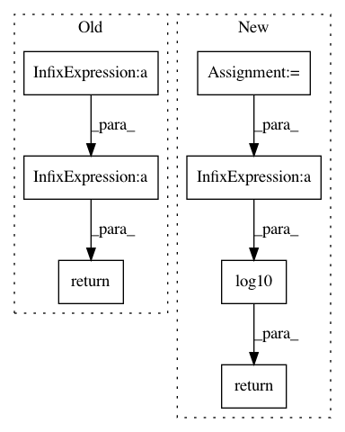

3daedc17ddab948752f3d6b90e56b177ea77ec42,nilearn/mass_univariate/permuted_least_squares.py,,permuted_ols,#Any#Any#Any#Any#Any#Any#Any#,252
Before Change
h0_fmax = np.sort(np.ravel(np.concatenate(ret)))
// convert scores into negative log10 p-values
// TODO: to speed this up, we could threshold scores_original_data
n_scores = n_descriptors * n_regressors
ravelized_scores = np.ravel(scores_original_data)
ret = joblib.Parallel(n_jobs=n_jobs)(joblib.delayed(_convert_to_pvalues)
(h0_fmax, ravelized_scores[chunk])
for chunk in gen_even_slices(
n_scores + 1, min(n_scores, n_jobs)))
pvals = np.concatenate(ret).reshape((n_regressors, n_descriptors))
return pvals, scores_original_data, h0_fmax
After Change
scores_as_ranks_parts, h0_fmax_parts = zip(*ret)
h0_fmax = np.hstack((h0_fmax_parts))
scores_as_ranks = np.zeros((n_regressors, n_descriptors))
for scores_as_ranks_part in scores_as_ranks_parts:
scores_as_ranks += scores_as_ranks_part
// convert ranks into p-values
pvals = (n_perm + 1 - scores_as_ranks) / float(1 + n_perm)
return - np.log10(pvals), scores_original_data, h0_fmax[0]
In pattern: SUPERPATTERN
Frequency: 3
Non-data size: 7
Instances
Project Name: nilearn/nilearn
Commit Name: 3daedc17ddab948752f3d6b90e56b177ea77ec42
Time: 2014-02-26
Author: virgile.fritsch@gmail.com
File Name: nilearn/mass_univariate/permuted_least_squares.py
Class Name:
Method Name: permuted_ols
Project Name: google/nucleus
Commit Name: 397dace4af2db3adaec1746ab4dce36ac715cdfe
Time: 2018-11-02
Author: no-reply@google.com
File Name: nucleus/util/genomics_math.py
Class Name:
Method Name: log10sumexp
Project Name: google/deepvariant
Commit Name: bd9bdcb334be151fe0195d8685d575355df5a551
Time: 2018-11-02
Author: no-reply@google.com
File Name: third_party/nucleus/util/genomics_math.py
Class Name:
Method Name: log10sumexp